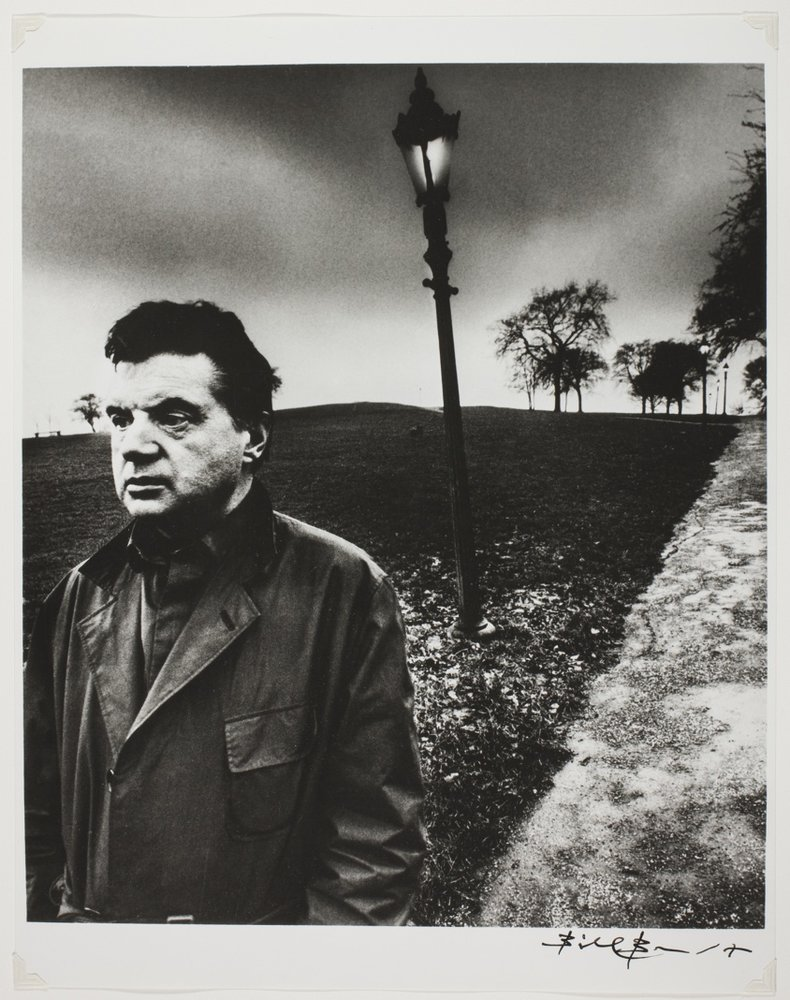

Francis Bacon Walking on Primrose Hill, London
Bill Brandt · 1963 · Gelatin silver print · 34.1 × 29.4 cm (image) · Art Institute of Chicago
In copyright. Look and learn: shown for study, not for download.
Bill Brandt was in his late fifties when he made this portrait on Primrose Hill in London. As a young man he had spent years in a sanatorium at Davos with tuberculosis, and in 1930 he had the use of Man Ray's studio and darkroom in Paris. The National Portrait Gallery in London gave his portraits an exhibition in 1982, the year before his death. Bacon's name is pencilled on the back of this print.